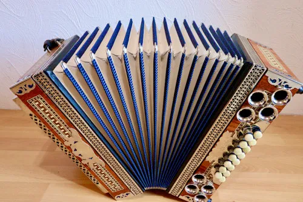
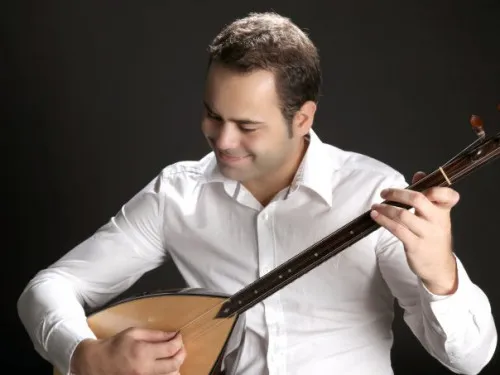

Steirische Harmonika Lernen mit Griffschrift
Produktprofil · Marktplatz-Daten 2026-10-10 · Verkaufsseiten-Recherche 2026-10-10 · Kategorien: Dancing & Music
- Steirische Harmonika Lernen mit Griffschrift ist ein/e Mitgliederbereich & Videokurs in Dancing & Music, vertrieben über den Digistore24-Marktplatz von Anbieter MarcelWaldmann, gelistet seit 2020-11-22.
- Listenpreis $141.16; Digistore24 meldet — Checkout-Konversion, — Stornierungsquote und 25 % Affiliate-Provision.
- Verdienst pro Verkauf (Affiliate): $35.29 (Anbieter-seitige Statistik, keine Prognose).
Interesse an Steirische Harmonika Lernen mit Griffschrift? Aktueller Preis, Boni und Garantiebedingungen finden Sie auf der offiziellen Seite des Anbieters:
Offizielle Verkaufsseite ansehen
Affiliate-Link (Werbung) — wir verdienen ggf. eine Provision, ohne Mehrkosten für Sie.

Marktplatz-Daten
| Produkttyp | Mitgliederbereich & Videokurs |
|---|---|
| Preis | $141.16 (Single payment) |
| Affiliate-Provision | 25 % |
| Garantie/Rückgabe | Laut Verkaufsseite des Anbieters — vor dem Kauf auf der offiziellen Seite prüfen |
| Anbieter | MarcelWaldmann (gelistet seit 2020-11-22) |
| Marktplatz-Statistiken* | Checkout-Konversion — · Stornoquote — · Verdienst/Verkauf $35.29 |
* Anbieter-seitige Statistiken von Digistore24; sie hängen von der Traffic-Qualität ab und sind keine Prognose.
Marktplatz-Beschreibung des Anbieters
Hier können sie die Steirische Harmonika mit Griffschrift in Video Kursen Lernen!
Von der Verkaufsseite des Anbieters
Seitentitel: Die beste Lernmethode auf dem Markt. Steirische Harmonika mit Griffschrift lernen! Kurs für Stimmung G-C-F-B.
Hauptüberschrift
Die beste Lernmethode auf dem Markt. Steirische Harmonika mit Griffschrift lernen! Kurs für Stimmung G-C-F-B.
149,90€
Extras
Abschnitts-Überschriften
- Kurszugang für 3 Monate
- Kurszugang für 3 Monate
Einstiegstext
Kennst du das Problem? Du spielst Steirische Harmonika und bringst dir Lieder über Lernvideos bei, in denen keine Noten bzw. Griffschrift vorhanden sind.
Bei mir ist das anders!!!!! In meinem Kurs, lernst du auf der Steirischen Harmonika, das Spielen mit Griffschrift und wie man Lieder Begleitet. So kannst du dir in Zukunft deine Lieder selbst beibringen und brauchst nicht nur nach Gehör zu spielen.
Es ist von Anfang an eine Schritt für Schritt Anleitung dabei. So kommst du leichter an dein Ziel. Ich bringe dir das Spielen mit 5 Fingern bei, so wie die Grundlagen für selbständiges Lernen.
Der Kurs wird nach und nach immer weiter ausgebaut und mit neuen Lektionen und Lernvideos gefüllt!
Recherche-Methode: rohes HTML · 1194 Wörter · Qualität: rich · recherchiert am 2026-10-10. Vollständige Recherche-Datei (MD) ↗
Wie Produkte dieser Art geliefert werden
Allgemeiner Hinweis zu diesem Produkttyp (keine anbieterspezifische Anleitung): Videokurse laufen über einen Mitgliederbereich: nach dem Checkout erhalten Sie Zugangsdaten per E-Mail und können die Lektionen in Ihrem eigenen Tempo streamen. Für die genaue Anwendung von Steirische Harmonika Lernen mit Griffschrift sind die offizielle Verkaufsseite und die enthaltenen Materialien maßgeblich.
Gut zu wissen
- Keine Garantie-Formulierung in unserer Recherche gefunden — bestätigen Sie das Rückgabefenster auf der offiziellen Seite, bevor Sie kaufen.
- Marktplatz-Zahlen (Preis, Provision, Konversion, Stornoquote) — Quelle: offizielle Digistore24-Marktplatz-API (Affiliate-Sicht), Stand 2026-10-10. Gegenprüfung: Marktplatz-Suche nach Produkt-ID 358931.
- Verkaufsseiten-Zitate — Quelle: https://musik-akademie.coachy.net/lp/musik-akademie/, abgerufen 2026-10-10 (Methode: rohes HTML). Verify: offizielle Seite öffnen.
- Garantie / Rückgabe — vom Anbieter festgelegt; vor dem Kauf auf der Verkaufsseite bestätigen.
- Nicht von uns geprüft: Produktqualität, Ergebnisse, Testimonials — kein Praxistest für dieses Listing durchgeführt.
Häufige Fragen zu Steirische Harmonika Lernen mit Griffschrift
Antworten aus dem Marktplatz-Snapshot (2026-10-10) und der Verkaufsseiten-Recherche (2026-10-10); Anbieteraussagen sind inline gekennzeichnet.
Was ist Steirische Harmonika Lernen mit Griffschrift?
Steirische Harmonika Lernen mit Griffschrift ist ein Angebot des Typs „Mitgliederbereich & Videokurs" im Digistore24-Marktplatz, Anbieter: MarcelWaldmann, gelistet seit 2020-11-22. Eingepflegt unter Tanzen & Musik. Digistore24 wickelt Checkout, Lieferung und Rückgaben ab.
Wie viel kostet Steirische Harmonika Lernen mit Griffschrift?
Der Digistore24-Marktplatz listet es für $141.16 (single payment). Preise legt der Anbieter fest und können sich ändern — der Marktplatz-Eintrag oben zeigt den Schnappschuss; die offizielle Verkaufsseite zeigt den aktuellen Preis.
Gibt es eine Geld-zurück-Garantie für Steirische Harmonika Lernen mit Griffschrift?
Unsere Verkaufsseiten-Recherche hat keine explizite Garantie-Formulierung gefunden. Viele Digistore24-Produkte bieten 60 Tage Geld-zurück, aber das legt jeder Anbieter selbst fest — bestätigen Sie es auf der offiziellen Verkaufsseite, bevor Sie kaufen.
Ist Steirische Harmonika Lernen mit Griffschrift seriös?
Wir bewerten keine Seriosität — wir veröffentlichen überprüfbare Zahlen: Anbieter MarcelWaldmann (gelistet seit 2020-11-22), Checkout-Konversion —, Stornoquote —, Affiliate-Verdienst/Verkauf $35.29 (alles Anbieter-seitige Marktplatz-Statistiken). Lesen Sie unsere 6-Punkte-Bewertungsmethode und entscheiden Sie anhand der Zahlen — oder diskutieren Sie Steirische Harmonika Lernen mit Griffschrift auf GitHub.
Wo kann ich Steirische Harmonika Lernen mit Griffschrift sicher kaufen?
Nur über die offizielle Verkaufsseite, die auf dieser Seite verlinkt ist (Checkout und Rückgaben laufen über Digistore24). Prüfen Sie dort Preis und Garantie vor der Bestellung. Der Link ist ein Affiliate-Link — der Kauf unterstützt diese Website ohne Mehrkosten für Sie.
Wie erhalte ich Steirische Harmonika Lernen mit Griffschrift nach der Zahlung?
Der Checkout läuft über Digistore24: Nach der Zahlung erhalten Sie Ihren Zugang oder Download per E-Mail und in Ihrem Digistore24-Kundenkonto. Lieferdetails für diesen Produkttyp: Videokurse laufen über einen Mitgliederbereich: nach dem Checkout erhalten Sie Zugangsdaten per E-Mail und können die Lektionen in Ihrem eigenen Tempo streamen. Bei Problemen kann der Digistore24-Käufersupport Ihre Bestellung wiederherstellen.
Ähnliche Angebote in Tanzen & Musik

Die Party DJ Setbook Business ENTERPRISE-Lizenz (B2B) richtet sich an Unternehmen, DJ-Agenturen, Veranstalter, Hotels, Clubs, Verleiher und Organisationen, die

Keyboard Videokurs für Anfänger Eine 52 wöchige Komplettausbildung für Keyboard Anfänger OHNE Vorkenntnisse NICHT DEN PROMO LINK auf der rechten Seite VERWENDEN

Keyboardkurs der 1000 Tipps für fortgeschrittene Spieler NICHT DEN PROMO LINK auf der rechten Seite VERWENDEN! >ACHTUNG! HIER KLICKEN< um auf ONLINEMUSIKS

Die Party DJ Setbook Business PRO-Lizenz (B2B) richtet sich an Unternehmen, DJ-Agenturen, Veranstalter, Hotels, Clubs, Verleiher und Organisationen, die ihren D
Ähnliche Preislage in Tanzen & Musik

Empfehle die einzigartigen Produkte von www.meineMusikschule.net meineMusikschule.net - so lernt man heute Instrumente spielen ;-) Deine Vorteile: Einmal-/ und
All Styles Abos der Social Dancing Academy Die Social Dancing Academy ist die größte Online Tanzplattform im DACH-Raum und hat bereits über 1000 aktive und sehr
Gitarre Lernen in 4 Wochen Crashkurs für Einsteiger. Die professionelle Gitarrenausbildung von Georg Norberg.
Ähnliche Suchanfragen
Wo Sie es sich ansehen können
Wo Sie es sich ansehen können
Aktuelle Preise, Garantie und Boni finden Sie auf der offiziellen Verkaufsseite:
Offizielle Verkaufsseite ansehen
Das ist ein Affiliate-Link (Werbung) — kaufen Sie darüber, verdienen wir ggf. eine Provision, ohne Mehrkosten für Sie.
Quellen & weiterführende Informationen
- Offizielle Verkaufsseite (aktueller Preis, Garantie, Boni): musik-akademie.coachy.net/lp/musik-akademie/ (Affiliate-Link)
- Öffentliche Digistore24-Produktseite: digistore24.com/product/358931
- Vollständige Recherche-Datei (Markdown, versioniert): content/products/42894-steirische-harmonika-lernen-mit-griffschrift.md
- Marktplatz-Kategorie: Tanzen & Musik
Wie wir Produkte wie Steirische Harmonika Lernen mit Griffschrift bewerten
Sechs Prüfungen, ausschließlich mit offiziellen Marktplatz-Zahlen. Die vollständige Bewertungsmethode lesen · unsere Recherche-Standards & Kennzeichnung.
Fragen oder eigene Erfahrungen mit Steirische Harmonika Lernen mit Griffschrift?
Praxis-Tests veröffentlichen wir erst, nachdem wir ein Produkt selbst gekauft haben — aber Ihre Erfahrung hilft anderen Lesern: Diskussion zu Steirische Harmonika Lernen mit Griffschrift auf GitHub starten/verfolgen. Falsche Zahl gefunden? Korrektur melden — jede Seite zeigt ihre Datenstände, Korrekturen gelten für die ganze Website.